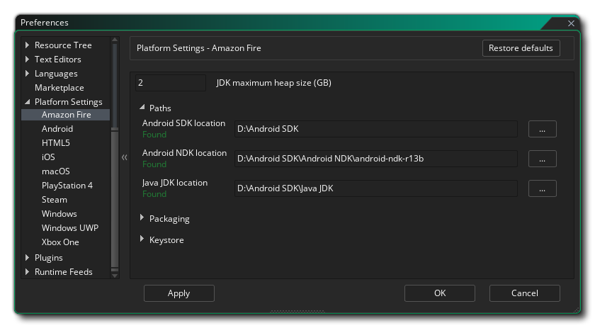
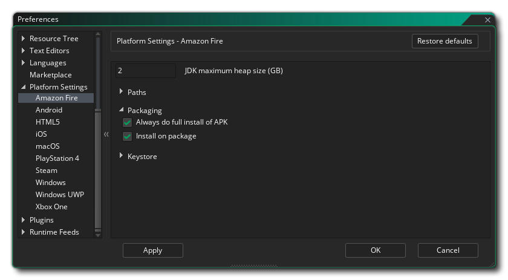
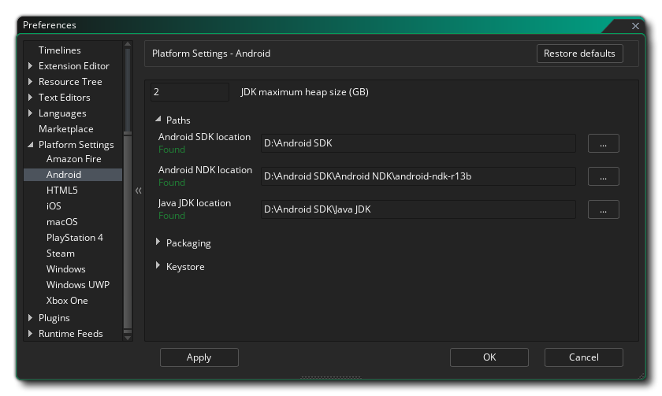
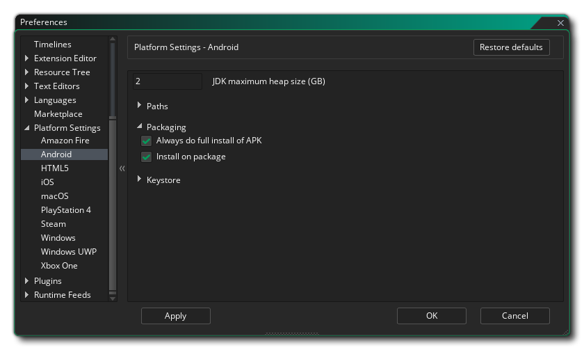
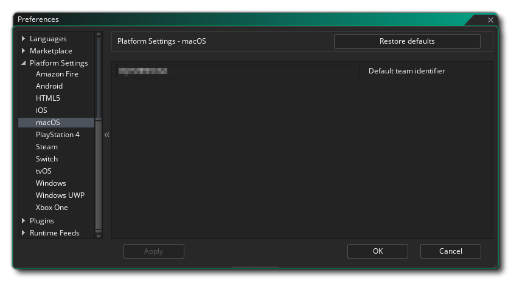
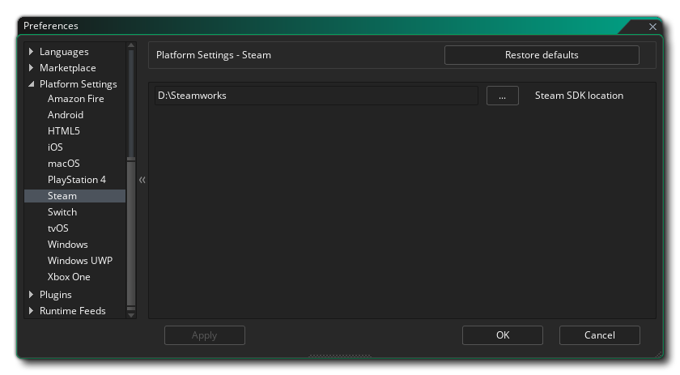
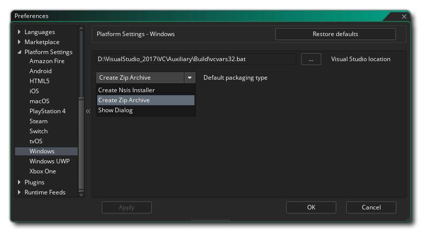
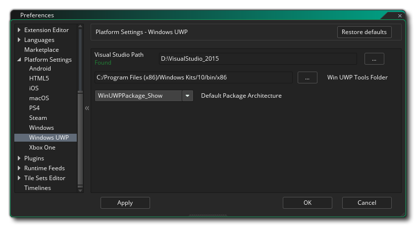

本手册的这一部分介绍了在将游戏编译到特定目标之前需要设置的不同 平台特定首选项。 这些通常只需要设置一次就可以开始（虽然 运行时（runtime） 的未来更新可能需要你更改某些内容，但这些内容将在 发行说明 中提及），并用于指向所需的 SDK 并设置你希望 GameMaker Studio 2 如何为特定平台编译你的游戏项目的基本选项。请注意，可用的平台将取决于你拥有的 许可，而不是所有平台都可用。
以下是所有可用目标平台及其首选项的列表：
Amazon Fire 首选项分为以下列出的各个部分。 其中一些是指 Android 工具，因为 Amazon Fire 目标基于 Android 并且共享相同的 SDK 要求。 
在首选项的顶部，你可以设置 Android JDK 的内存堆大小。接下来，你必须设置各种不同的 路径，以便 GameMaker Studio 2 知道在哪里查找构建最终可执行程序包和测试游戏所需的各种工具。这分为 Android SDK、Android NDK 和 Java JDK 三个部分。这些路径应该已经自动填写，但如果你遇到任何问题，可以单击右侧的按钮打开文件资源管理器并手动选择每一项的位置。你可以在 此处 找到每个 SDK 所需的版本的详细信息。路径应该在你应用它们时进行验证，并且消息将显示 “已找到” 或告诉你错误（在这种情况下，你应该修改所有信息以确保它是正确的）。
在下面你有不同的 打包 选项，它们是：

- 始终完全安装 APK：标记此选项将使 GameMaker Studio 2 从你的设备中删除任何以前运行的游戏，以及从你的测试设备中删除所有相关文件（例如，*.ini 文件），然后再安装新版本的游戏。
- 在程序包上安装：标记此选项时，编译最终的可执行文件 *.apk 程序包会自动在任何已连接的设备上（覆盖）安装它。
最后我们来到 秘钥库（KeyStore）。 这是一个用于 “签署” 所有 Amazon Fire 应用程序的文件，因此请正确填写所有详细信息，请记住，将来创建和更新所有 Amazon Fire 应用程序需要此文件，这意味着设置完成后，建议 截取所用设置的屏幕截图，并对最终文件进行备份。 如果你丢失了此文件，则 无法 更新已上传到 Google Play 商店的任何现有游戏。
注意：相同的密钥库可用于 Android 和 Amazon Fire 目标。
要创建新的密钥库文件，需要以下详细信息：
- 文件名： 这是秘钥库文件的名称。注意：这不是你的姓名或公司名称，而是要生成的文件的名称！ 如果你已有以前项目中的密钥库文件，则可以单击此处的文件浏览器按钮并将 GameMaker Studio 2 指向旧密钥库文件（或单击 导入 按钮）。在这种情况下，你仍然必须填写其余所需信息（就像你 第一次 生成文件时那样），但是你 不能单击 生成秘钥库 按钮！这将生成一个 新的 密钥库文件，覆盖前一个。
- 通用名： 这通常是你的名字。
- 密码: 秘钥库文件的安全密码，密码长度必须至少为六个字符。
- 别名: 这是另一个可用于秘钥库文件的名称，应与上面输入的名称不同。
- 组织单位: 你所属公司的内部部门。
- 组织: 公司的名称。
- 位置: 你所在城镇的名称。
- 国家: 你所在国家 / 地区的标准双字母代码。
填写完此信息并对此感到满意后，按下标记为 GameMaker Studio 2 生成密钥 的按钮以创建必要的秘钥库文件。这可能需要一些时间，但一旦完成，通常不需要再次更改。 请注意，你可以单击 导入 按钮以导入先前创建的密钥库文件（请参阅上面的 文件名 部分），还可以通过单击 显示密钥哈希 按钮来检索密钥库 SHA1 哈希值。按此按钮将生成两个直接链接到你的密钥库文件的特殊安全散列密钥，某些网站需要这些密钥才能获得正确的功能（例如，使用 Sha1 散列的 Facebook 或 Google Play）。 如果需要，只需按下按钮，然后复制并粘贴生成的哈希秘钥即可。
有关如何设置所需 Amazon Fire SDK 的更多详细信息，请参阅 YoYo游戏知识库中的这篇文章。
Android 偏好设置分为以下各个部分。 
在首选项的顶部，你可以设置 Android JDK 的内存堆大小。接下来，你必须设置各种不同的 路径，以便 GameMaker Studio 2 知道在哪里查找构建最终可执行程序包和测试游戏所需的各种工具。这分为 Android SDK、Android NDK 和 Java JDK 三个部分。这些路径应该已经自动填写，但如果你遇到任何问题，可以单击右侧的按钮打开文件资源管理器并手动选择每一项的位置。你可以在 此处 找到每个 SDK 所需的版本的详细信息。路径应该在你应用它们时进行验证，并且消息将显示 “已找到” 或告诉你错误（在这种情况下，你应该修改所有信息以确保它是正确的）。
在下面你有不同的 打包 选项，它们是：

- 始终完全安装 APK：标记此选项将使 GameMaker Studio 2 从你的设备中删除任何以前运行的游戏，以及从你的测试设备中删除所有相关文件（例如，*.ini 文件），然后再安装新版本的游戏。
- 在程序包上安装：标记此选项时，编译最终的可执行文件 *.apk 程序包会自动在任何已连接的设备上（覆盖）安装它。
最后我们来到 秘钥库（KeyStore）。这是一个用于 “签署” 所有 Android 应用程序的文件，因此请正确填写所有详细信息，请记住，将来需要创建和更新所有 Android 应用程序，这意味着设置完成后，建议使用所用设置的屏幕截图并对最终文件进行备份。如果你丢失了此文件，则 无法 更新已上传到 Google Play 商店的任何现有游戏。
注意：相同的密钥库可用于 Android 和 Amazon Fire 目标。
要创建新的密钥库文件，需要以下详细信息：
- 文件名： 这是秘钥库文件的名称。注意：这不是你的姓名或公司名称，而是要生成的文件的名称！ 如果你已有以前项目中的密钥库文件，则可以单击此处的文件浏览器按钮并将 GameMaker Studio 2 指向旧密钥库文件（或单击 导入 按钮）。在这种情况下，你仍然必须填写其余所需信息（就像你 第一次 生成文件时那样），但是你 不能单击 生成秘钥库 按钮！这将生成一个 新的 密钥库文件，覆盖前一个。
- 通用名： 这通常是你的名字。
- 密码: 秘钥库文件的安全密码，密码长度必须至少为六个字符。
- 别名: 这是另一个可用于秘钥库文件的名称，应与上面输入的名称不同。
- 组织单位: 你所属公司的内部部门。
- 组织: 公司的名称。
- 位置: 你所在城镇的名称。
- 国家: 你所在国家 / 地区的标准双字母代码。
填写完此信息并对此感到满意后，按下标记为 GameMaker Studio 2 生成密钥 的按钮以创建必要的秘钥库文件。这可能需要一些时间，但一旦完成，通常不需要再次更改。 请注意，你可以单击 导入 按钮以导入先前创建的密钥库文件（请参阅上面的 文件名 部分），还可以通过单击 显示密钥哈希 按钮来检索密钥库 SHA1 哈希值。按此按钮将生成两个直接链接到你的密钥库文件的特殊安全散列密钥，某些网站需要这些密钥才能获得正确的功能（例如，使用 Sha1 散列的 Facebook 或 Google Play）。 如果需要，只需按下按钮，然后复制并粘贴生成的哈希秘钥即可。
有关如何设置所需 Android SDK 的更多详细信息，请参阅 YoYo 游戏知识库中的这篇文章。
iOS 首选项具有以下选项：
- 默认团队标识符： 你可以在此处添加 Apple 为你分配的 默认团队标识符。当你的游戏文件被发送到 Xcode 以构建应用程序时，将使用此团队 ID，并允许 Xcode 生成所需的签名证书。 请注意，默认情况下，此设置将应用于为 iOS 构建的所有游戏，但可以通过 iOS 游戏选项 按项目覆盖。
- 禁止构建和运行：默认情况下，当你创建 iOS 项目然后构建最终的可执行程序包时，GameMaker Studio 2 将构建程序包，然后尝试在任何连接的设备上运行它。选中此选项将禁止构建应用程序并在设备上运行它，只需在主机 Mac 上创建一个 XCode 项目
- macOS 安装路径：构建 Mac 上项目文件的安装路径。
macOS 首选项具有以下选项： 
- 默认团队标识符： 你可以在此处添加 Apple 为你分配的 默认团队标识符。当你的游戏文件被发送到 Xcode 以构建应用程序时，将使用此团队 ID，并允许 Xcode 生成所需的签名证书。 请注意，默认情况下，此设置将应用于为 mac OS 构建的所有游戏，但可以通过 macOS 游戏选项 按项目覆盖该设置。
Steam SDK 用于通过 Steam 平台分发的 Windows、Mac OS 和 Ubuntu（Linux）版本。本节包含使其在你的项目中工作所需的设置选项： 
- Steam SDK 路径：安装 Steam SDK 的系统路径。 一旦设置了这条 SDK 路径，你就需要在 游戏选项 中激活 Steam，然后为每个平台添加 App ID。
Windows 首选项具有以下选项： 
- Visual Studio 路径：此选项用于将 GameMaker Studio 2 指向构建 PC 上安装的微软 Visual Studio。
- 默认程序包类型: 在构建最终的 Windows 可执行程序包时，你可以选择创建 安装程序（使用 NSIS）还是创建游戏及其中任何其他文件的 ZIP 压缩文件。默认情况下，你可以选择在编译时选择这两个选项中的哪一个，但你可以将此首选项设置为始终使用其中一个。请注意，当此选项设置为 显示对话框 时，在编译时弹出的实际对话窗口中，选择 “记住打包选项” 会将此首选项设置为你选择的选项。
Windows UWP 首选项具有以下选项： 
- Visual Studio 路径：此选项用于将 GameMaker Studio 2 指向构建 PC 上安装的微软 Visual Studio。
- 默认包体系架构：在构建最终的 Windows UWP 可执行包时，你可以选择创建将包含游戏以及其中的任何其他文件的 x86、x64 或 ARM 包。在这里，你可以设置要使用的包的默认值，或者选择 显示对话框 以在你点击编译按钮询问选择哪个时弹出一个窗口。 通常，你希望将 x86 用于 Windows 10 计算机，x64 用于 Xbox One，ARM 用于 Windows 10 设备。


请注意，除了设置这些首选项之外，你还需要设置其中某些平台所针对的设备，否则你可能无法编译或测试项目。 有关详细信息，请参阅 编译 章节和 设备管理器 章节。